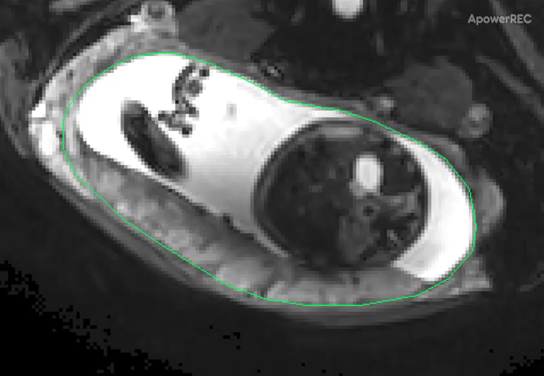
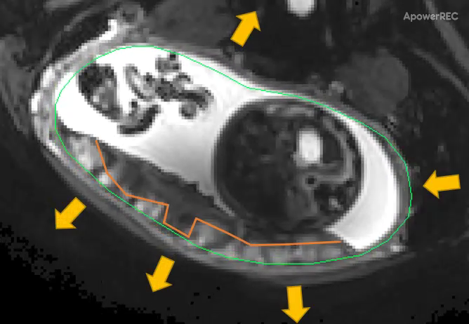
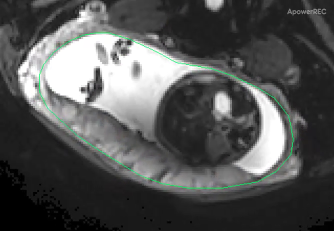
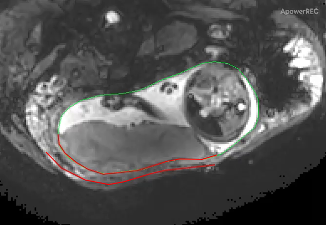
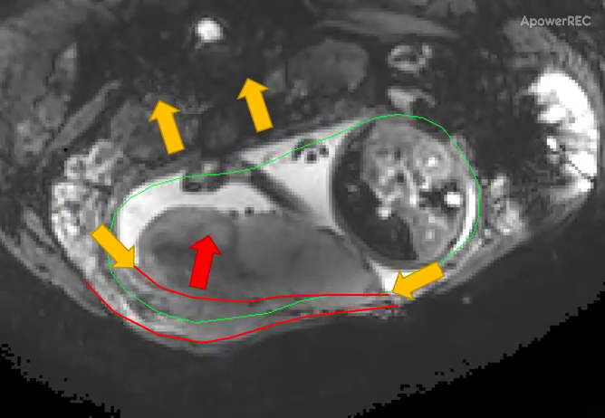
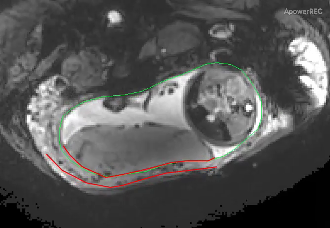

Changing uterine–placental configuration
These original publisher movies show coarse regional configuration changes during pregnancy. They are screen recordings of displayed MRI, with the authors’ contours, arrows and software watermark retained. They do not measure pressure, blood-flow direction or a placental exchange trajectory.
HC29: Source-called Braxton Hicks example
Focus the video region to pan with arrows or Home/End at native size. Playback/seek units are publisher-file seconds, not scanner acquisition time.



Ordered observations
- The opening source frame supplies the case’s coarse fetal/fluid/wall context.
- The middle selected frame retains the authors’ movement markings; configuration differs from the opening field.
- The last source frame supplies the later configuration. Fetal and maternal motion can also affect appearance; no displacement or volume is newly measured.
Dellschaft et al. (2020), The haemodynamics of the human placenta in utero, PLOS Biology 18:e3000676, Supplementary Movie 1 (HC29). © Authors; CC BY 4.0. Original complete MP4 and unchanged decoded full-field stills; no crop, new annotation, colour change or interpolation.
HC11: Source-called utero-placental-pump example
Focus the video region to pan with arrows or Home/End at native size. Playback/seek units are publisher-file seconds, not scanner acquisition time.



Ordered observations
- The opening source frame supplies the case’s coarse fetal/fluid/wall context.
- The middle selected frame retains the authors’ movement markings; configuration differs from the opening field.
- The last source frame supplies the later configuration. Fetal and maternal motion can also affect appearance; no displacement or volume is newly measured.
Dellschaft et al. (2020), The haemodynamics of the human placenta in utero, PLOS Biology 18:e3000676, Supplementary Movie 3 (HC11). © Authors; CC BY 4.0. Original complete MP4 and unchanged decoded full-field stills; no crop, new annotation, colour change or interpolation.